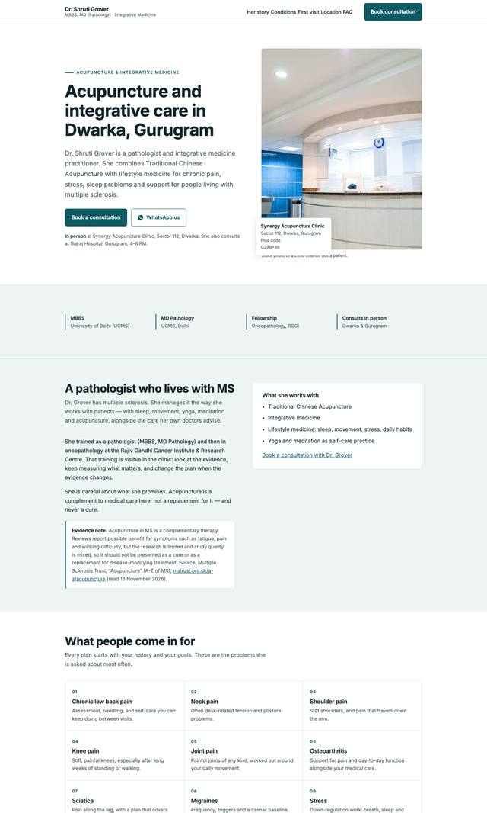
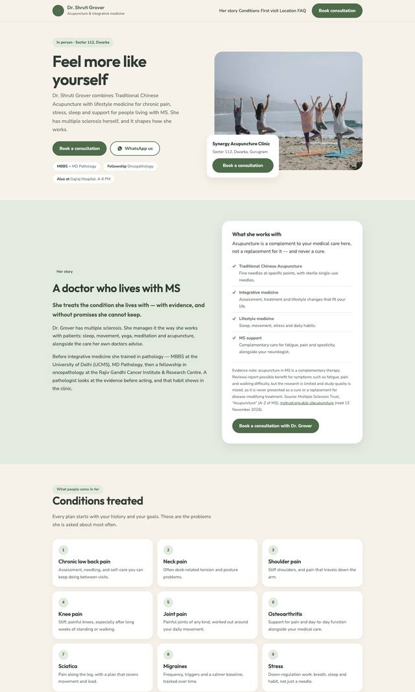
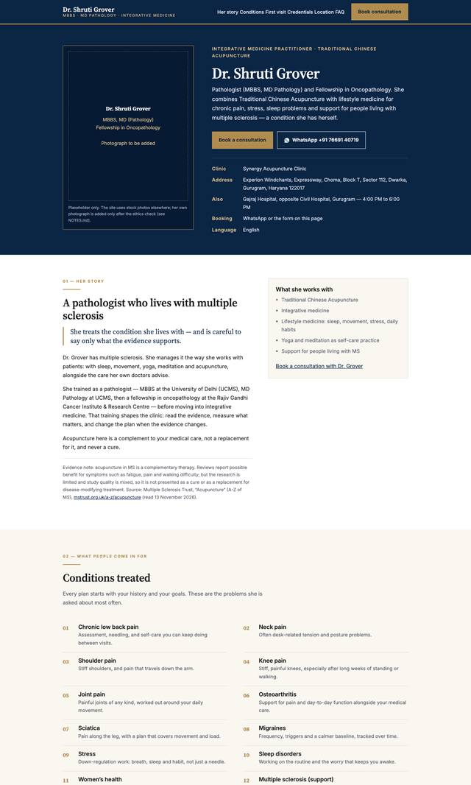

Option 1
Clinical calm
White, one deep teal, crisp sans serif and a lot of space — the trust of a hospital with the warmth of a clinic.
Four directions for the clinic homepage. Open each one on a phone and on a laptop; every option leads to Book a consultation (WhatsApp button + a short form). Notes, fonts, colours and the real sites each one borrows from are in NOTES.md.

White, one deep teal, crisp sans serif and a lot of space — the trust of a hospital with the warmth of a clinic.

Off-white paper, serif headlines and earth tones — her MS story leads, and the page reads like a magazine feature.

Soft sage and sand, rounded shapes and gentle photos — calm, friendly and the easiest of the four to read on a phone.

Navy and gold, very structured: her photo slot, the qualifications and the clinic details come before everything else.
CLINIC object at the bottom of each page holds the address, hours, phone and map link, so a move is a one-place edit. In the real build this becomes one file that Astro renders at build time.shots/ (opt1-1440.png, opt1-390.png, opt1-390-top.png for each option).